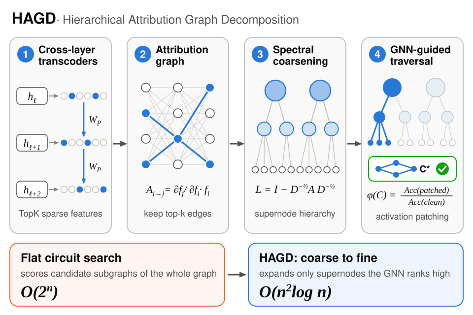

On 19 January we posted Hierarchical Sparse Circuit Extraction with Shahnawaz Alam and Mohammed Kaif Pasha. I am the first author.
A circuit is a small set of interpretable features, plus the causal edges between them, that explains one behaviour of a model. Transcoders make the features readable and attribution graphs supply the edges. The step that does not scale is the search. Trying subsets exhaustively grows as 2n, and methods that patch one edge at a time pay a patching pass for every edge.
The idea
HAGD borrows the coarse-to-fine idea from graph partitioning. Features that attribute strongly to each other are grouped into supernodes by spectral clustering, the groups are grouped again, and the search starts at the top. A graph attention network decides which branches to open, so most of the graph is never touched, and the worst case drops to O(n2 log n).
{kind=link}

One design choice I still like. Spectral clustering needs a symmetric graph, but attribution is directed. HAGD clusters on a symmetric magnitude skeleton and keeps the true edge directions for the search and the patching.
When I re-ran the released code with five seeds and three controls, the circuit it found did no better than random features, and the larger results in the preprint were not in the code. The details are in I audited my own paper, and the project page now reports only what the code reproduces.